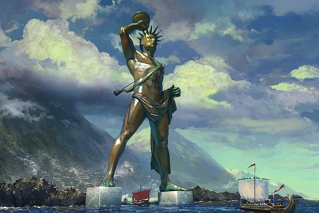
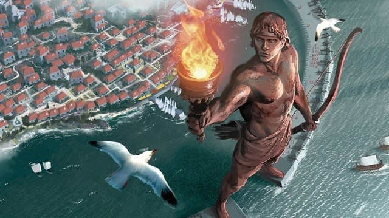

Після цілого року облоги ворог відступив від стін грецького міста Родосу. За свій порятунок жителі міста стали дякувати захистив їх бога Сонця Геліоса і пообіцяли побудувати в його частина найвеличнішу статуя, відому нам зараз як Колос Родоський.
Спорудження нового дива світу почалося в 302 році до нашої ери. Будівництвом зайнявся відомий архітектор і скульптор того часу Харес. Споруда йшла знизу вгору - від ступень до голови. Масивні бронзові складові кріпилися на не менше величезний залізний каркас. Для полегшення побудови використовувалися земляні насипи. З кожним підйомом на новий рівень насип збільшували, деталі закріплювали і далі обкопували. Після закінчення будівництва насип прибрали, і перед здивованою публікою постала величезна статуя Колоса Родоського.

Закінчення будівництва оцінюють 280 роком до нашої ери. На будівництво статуї пішло 13 тонн бронзи і 8 тонн заліза. Статуя всередині вийшла порожнистої, тому для більшої стійкості її засипали камінням і глиною. Піднесенням для 33-метрового Колоса служив мармуровий постамент.
Найвеличніша статуя давнини виявилася недовговічною. Лише через 60 років в 220 році до нашої ери в результаті землетрусу статуя Геліоса в Родосі обломилася в районі колін і впала. З цього часу і пішов вислів «колос на глиняних ногах». Статуя валявся тут цілих 900 років, і навіть в такому вигляді вона приваблювала багато любителів побачити чогось особливе. У 977 році через грошової потреби статуя була відправлена на переплавку.

Колос Родоський. Цікаві факти
До наших днів не дійшло точної і докладної інформації про статую на Родосі. Згадки зводяться до записів Плінія і Філон, інші ж автори використовували в основному тільки короткі згадки. Таким чином, немає інформації, як виглядала статуя, і навіть де вона була точно стояла.
З приводу виду Родоського Колоса завжди існувало безліч версій і розбіжностей. Деякі його зображують з широко розставленими ногами, що з'єднують береги входу в гавань Родосу. Але за умови, що відстань між цими берегами складає 400 метрів, 33-метрова споруда навряд чи могло бути встановлено таким чином. В умовах зведення насипу, а відповідно необхідності великого вільного простору для будівництва, будівництво Колоса за сучасними археологічними даними була також неможлива. Є припущення, що він був все ж розміщений на березі моря і було видно припливають кораблям. Так в наш час була знайдена кисть статуї на дні древньої гавані Родосу, що тільки збільшує вагу цієї версії. Також серед частих зображень, статуя має витягнуту руку. Але, знову ж таки за сучасними розрахунками, цього бути не могло,
І хоча навколо Колоса залишається багато загадок, це не завадило йому стати одним з чудес світу Стародавнього світу, а ідеї щодо відновлення та реконструкції великого і вражаючого статуї витають в головах і в наші дні.